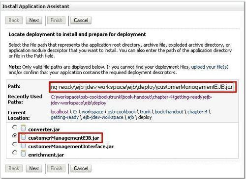

In this chapter, we will cover:
- Exposing an EJB session bean as a service on the OSB using the EJB transport
- Using JNDI Provider to invoke an EJB session bean on a remote WebLogic domain
- Using the
Converterclass with EJB transport to help converting data types - Exposing an EJB session bean as an EJB on the OSB using the JEJB transport
- Manipulating the response of the JEJB transport by a Java Callout action
With the release 11g of the Oracle Service Bus there are two transports for directly communicating to an EJB session bean layer, the EJB, and the JEJB transport. The first was already available in previous versions of OSB whereas the latter, the JEBJ transport, has been introduced with 11g.
The EJB transport is only available for business services whereas the JEJB transport can be used both on a proxy service as well as for business services.
The EJB and JEJB business services both call the session beans, but there is an important difference between these two transports. With the JEJB transport the request and response remain Java object (POJO) and will not be transformed to XML. This is great for performance but it means you cannot change the request or response with the default OSB activities. To manipulate the request or response you should use a java callout in the proxy service. To a J2EE client, a JEJB proxy service pipeline looks like a stateless session bean.
The EJB transport behaves the same as a HTTP or a JCA DB adapter business service.
In order to perform the recipes in this chapter, we need an EJB session bean available on a server. To simplify life, we can deploy it directly to the OSB server, although in real life the EJB is often to be found on a separate machine.
The EJB session bean we are using here for the tests, implements the following interface:
@Remote
public interface CustomerManagement {
public Customer findCustomer(Long id);
public List findAllCustomers();
}
We have already created a JAR file with the EJB session bean, which can be deployed through the WebLogic console by performing the following steps:
- Click on Deployments in the Domain Structure tree on the left.
- Click on Install on the detail page.
- Navigate to the
\chapter-4\getting-ready\ejb-jdev-workspace\ejb\deployfolder. - Select customerManagementEJB.jar and click on the Next button.

- Select the Install this deployment as an application option and click on Next.
- Click on the Finish button.
Now with the EJB session bean in place, let's test it through the test class provided in the JDeveloper workspace. In JDeveloper, perform the following steps:
- Open the
osbbook_jejb.jwsworkspace. - Expand the
clientproject until you reach theCustomerManagementClient.javaclass. - Open the class and check that the password in the
getInitialContext()is correct for the environment. - Right-click on the
CustomerManagementClient.javafile and select Run:
We can see that the data about the customer with the id = 100 is returned. That tells us the environment is ready for the coming recipes.